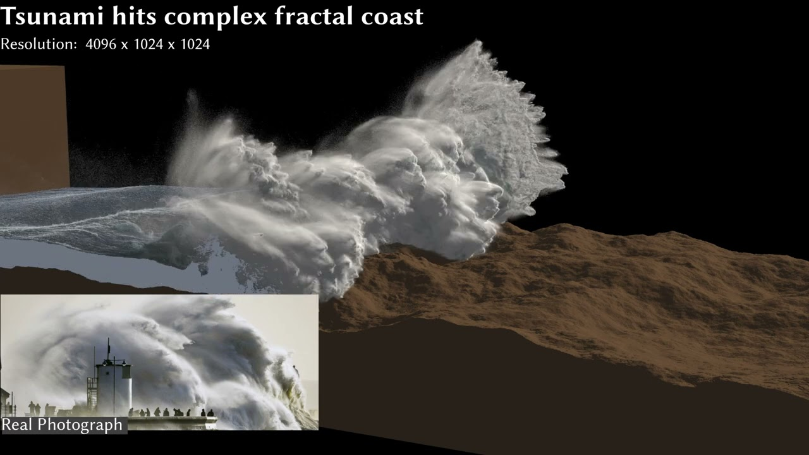

CFD Gallery

Featured work · Play video
Index
Sources
Free-surface
& ocean
Adaptive Phase-Field-FLIP — very large-scale two-phase fluid
Braun · Bender · Thürey
ACM Trans. Graph.
· 2025
DOI 10.1145/3730854
Method
PF-FLIP
· adaptive
Work index
01
↓
Selected works
Work Index
01
work
No.
Preview
Title / field
Method
Year
DOI
01
Free-surface & ocean
Adaptive Phase-Field-FLIP
PF-FLIP
Adaptive
2025
↗
Simulation video
×